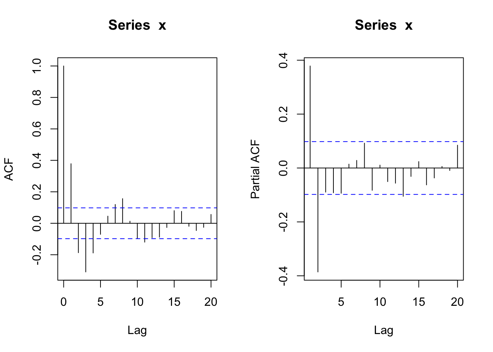
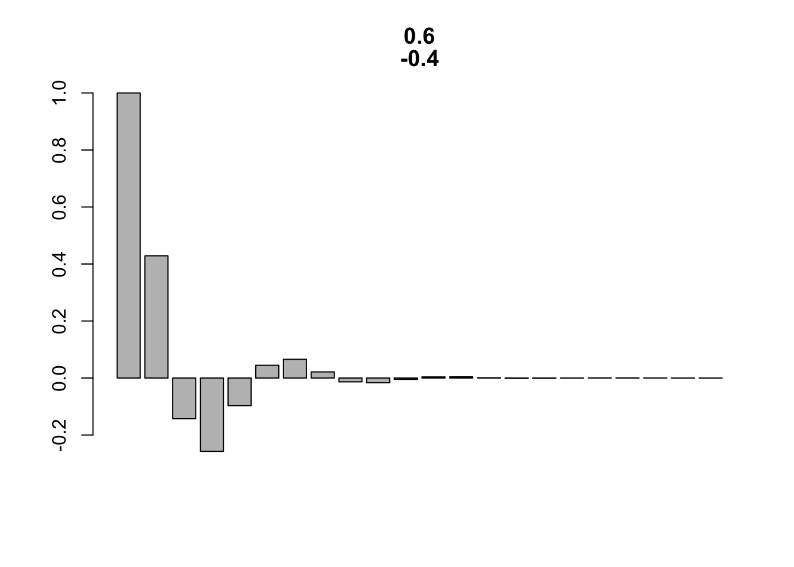
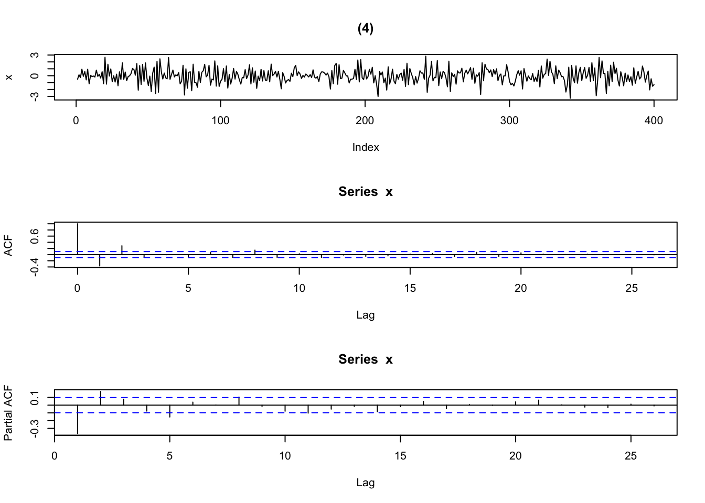

2 定常性と自己相関関数
2.1 確率過程の2次特性: 平均関数と自己共分散関数
- \(E[X_t]<\infty\)である確率過程 \(\{X_t,t=0,\pm1,\pm2,\ldots\}\) に対して以下の二つの関数を定義することができる.
- 平均関数 (mean function): \[ \mu_X(t) = E[X_t] \qquad (\#eq:mean.func)\]
- 自己共分散関数 (autocovariance function): \[ \gamma_X(t,s) = Cov[X_t,X_s] = E[(X_t - \mu_X(t))(X_s - \mu_X(s))] \]
- さらに, 自己相関関数 (autocorrelation function) も定義できる: \[ \rho_X(t,s) = \frac{\gamma_X(t,s)}{\sqrt{\gamma_X(t,t)}\sqrt{\gamma_X(s,s)}} \]
- 時系列解析では, 主にこれら1次, 2次モーメントに依存する時系列的性質に注意を向ける.
2.2 定常性 (stationarity)
- 確率過程に関する規則性の概念の一つ
- 大雑把に言えば, \(\{X_t,t=0,\pm1,\pm2,\ldots\}\) とそれが時間的に任意の整数\(h\)だけシフトした \(\{X_{t+h},t=0,\pm1,\pm2,\ldots\}\) とが統計的に類似の性質を持つこと
- 理論面ばかりでなく, 時系列データの解析の実践面においても想定されることの多い重要な性質
- 大きく, 強定常性 (strict stationarity), 弱定常性 (weak stationarity)の2種類
2.2.1 強定常性
- 確率過程 \(\{X_t,t=0,\pm1,\pm2,\ldots\}\) が強定常であるとは (定義):
- 任意の長さ\(k=1,2,\ldots\), 任意の時点組合せ\(t_1,t_2,\ldots,t_k\), 任意のラグ\(h=0,\pm1,\pm2,\ldots\)に対して, 二つの確率変数ベクトル \((X_{t_1},X_{t_2},\ldots,X_{t_k})\) と \((X_{t_1+h},X_{t_2+h},\ldots,X_{t_k+h})\) が, 同じ確率分布を持つ.
- すなわち, 強定常であれば, \(X_t\)は同一分布を持つ.
- また, iid確率過程は, 強定常である.
2.2.2 弱定常性
- 確率過程 \(\{X_t,t=0,\pm1,\pm2,\ldots\}\) が弱定常であるとは (定義):
- \(\mu_X(t)\)が時間\(t\)に独立である: \(\mu_X(t) =\mu_X(0) =: \mu\)
- \(\gamma_X(t+h,t)\)が, 各\(h\)に対して時間\(t\)に独立である: : \(\gamma_X(t+h,t) = \gamma_X(h,0) =: \gamma_X(h)\)
- さらに, 自己相関関数: \[ \rho_X(h) = \frac{\gamma_X(h)}{\gamma_X(0)}\]
- 習慣により, 時系列解析では単に“定常”と言えば弱定常を指す.
2.2.3 ホワイトノイズ
- 最も単純な定常過程にホワイトノイズ (白色ノイズ) がある.
- ホワイトノイズは, 時系列解析で使われる各種モデルの構築に中心的役割を果たす.
- ホワイトノイズ (“弱ホワイトノイズ”):
- 平均が一定(通常, ゼロ), 分散が有限で一定, 自己相関がゼロの確率過程
- 表記: \(\{X_t\} \sim WN(0,\sigma^2)\)
- 数式表現:
- \(E[X_t]=0\), \(E[X_t^2]=\sigma^2 < \infty \quad (\forall t)\) \[ E[X_t X_s] = \begin{cases} \sigma^2 & (t = s)\\ 0 & (t \ne s) \end{cases} \quad (\forall t,s) \]
- IIDノイズ
- 有限分散を持つiid確率過程 (通常, 平均ゼロ)
- 独立性 → 無相関性により, ホワイトノイズと同じ形の自己共分散関数を持つ
- 表記: \(\{X_t\} \sim IID(0,\sigma^2)\)
- “強ホワイトノイズ”と呼ばれることもある
- 有限分散を持つiid確率過程 (通常, 平均ゼロ)
2.3 標本平均と標本自己共分散関数
観測された時系列データ\(x_1,x_2,\ldots,x_n\)に対して
標本平均: \[ \bar{x} = \frac{1}{n} \sum_{t=1}^n x_t \qquad (\#eq:smean)\]
- 確率過程 \(\{X_t,t=0,\pm1,\pm2,\ldots\}\) の実現値を時間軸方向に平均した値
標本自己共分散関数: \[ \hat{\gamma}(h) = \frac{1}{n} \sum_{i=1}^{n-|h|} (x_{t+|h|}-\bar{x})(x_{t}-\bar{x}),\quad|h|<n \]
標本自己相関関数: \[ \hat{\rho}(h) = \frac{\hat{\gamma}(h)}{\hat{\gamma}(0)}, \quad |h|<n \]
定常性の仮定が成立していなとくとも, 任意の時系列データに対して, (時間軸に沿って) 標本平均関数および標本自己共分散関数・標本自己相関関数を計算することができる.
標本自己共分散関数・標本自己相関関数の形状は, トレンドや周期性の存在を示す手掛かりとなる.
2.3.1 アンサンブル平均 vs 標本平均
- 平均関数の定義式における期待値 (式@ref(eq:mean.func)) は, 時点\(t\)において, 確率変数 \(X_t\) の全ての実現可能な値に対して平均を計算したもの (“アンサンブル平均”) である.
- 一方, 標本平均 (式(??)) は, 時系列データ (確率過程の実現値) を時間軸方向に平均した値 (時系列平均) である.
- よって, アンサンブル平均と時系列平均は, 概念的には別物である.
- データの背後にある確率過程\(\{X_t\}\)が定常であれば, 平均関数は定数値 \(\mu\) を取るので, 標本平均を用いて推定する意味が出てくる.
- 標本平均 \(\bar{x}\) の計算において, 十分に長いデータ期間を取る (標本サイズ \(n \rightarrow \infty\) ) ことで, \(\bar{x}\) が真の値 \(\mu\)に次第に近付いていく確率過程の性質を, (平均)エルゴード性 (ergodicity in (the) mean) と呼ぶ.
- 定常な確率過程を前提とした時系列解析は, 通常は, エルゴード性を有するモデルを前提に行われる.
2.4 標本自己相関関数
- 参考文献: CM, Ch.2 & 4, Tsay, Ch.2
2.4.1 白色ノイズ
- (正規) 白色ノイズ ((Gaussian) white noise)

# ヒストグラム
z <- seq(-3, 3, length = 1000)
hist(rnorm(100), prob = T, xlim = c(-3, 3)); points(z, dnorm(z), type = "l")


2.4.3 非定常成分を含む時系列

2.4.3.2 時系列の分解
- decompose関数の利用


#library(zoo) # na.trim()使用
#acf(ap_decom$random, na.action = na.trim) # ← NA除去
# 標準偏差
sd(ap[7:138]) # sd of the original series
#> [1] 109.4187
sd(ap[7:138] - ap_decom$trend[7:138]) # after substracting the trend estimate
#> [1] 41.11491
sd(ap_decom$random[7:138]) # the error component
#> [1] 0.0333884
# → std dev gets smaller
#または
#library(zoo)
#ap_d_zoo = zoo(ap_decom$random)- stl関数の利用
# stl(): Seasonal Decomposition of Time Series by Loess
ap_stl<- stl(ap, "period")
# トレンド成分
plot(ap_stl$time.series[, "trend"])


2.4.3.3 階差 (differencing)


- かばん検定
# かばん検定 (portmanteau test)
Box.test(diff(log(ap), lag = 12)) # Box-Pierce検定 (デフォルト)
#>
#> Box-Pierce test
#>
#> data: diff(log(ap), lag = 12)
#> X-squared = 67.234, df = 1, p-value = 2.22e-16
Box.test(diff(log(ap), lag = 12), type = "Ljung")# Ljung-Box検定
#>
#> Box-Ljung test
#>
#> data: diff(log(ap), lag = 12)
#> X-squared = 68.774, df = 1, p-value < 2.2e-162.4.3.4 株価データの例 (出所: Tsay, Ch.2)
ifl <- file.path(idir, "m-ibmsp-2611.txt")
da <- read.table("m-ibmsp-2611.txt", header = T)
#da <- read.table("m-ibmsp6709.txt", header = T)
head(da)
#> data ibm sp
#> 1 19260130 -0.010381 0.022472
#> 2 19260227 -0.024476 -0.043956
#> 3 19260331 -0.115591 -0.059113
#> 4 19260430 0.089783 0.022688
#> 5 19260528 0.036932 0.007679
#> 6 19260630 0.068493 0.043184
ibm <- da$ibm
sp5 <- da$sp
plot(sp5, ibm)


#> , , 1
#>
#> [,1]
#> [1,] 1.000000000
#> [2,] 0.037561974
#> [3,] -0.008664145
#> [4,] -0.016156989
#> [5,] -0.030554233
#> [6,] 0.015370816
#> [7,] -0.041809301
#> [8,] 0.003236462
#> [9,] 0.063082544
#> [10,] 0.048232274
#> [11,] 0.037150816
#> [12,] 0.011816712
#> [13,] 0.010848647
#> [14,] -0.067274698
#> [15,] -0.011545286
#> [16,] -0.038790792
#> [17,] 0.031043139
#> [18,] 0.029670820
#> [19,] 0.065795548
#> [20,] 0.019771486
#> [21,] -0.013009184
#> [22,] -0.012984508
#> [23,] 0.002353094
#> [24,] -0.072724702
#> [25,] 0.053508492
#> [26,] -0.010189813
#> [27,] 0.036015597
#> [28,] 0.019976030
#> [29,] 0.032989584
#> [30,] 0.004650878
#> [31,] -0.016390330
Box.test(ibm, lag = 30) # Box-Pierce (デフォルト)
#>
#> Box-Pierce test
#>
#> data: ibm
#> X-squared = 38.094, df = 30, p-value = 0.1473
Box.test(ibm, lag = 30, type = 'Ljung') # Ljung-Box
#>
#> Box-Ljung test
#>
#> data: ibm
#> X-squared = 38.75, df = 30, p-value = 0.1314
#lnibm <- log(ibm + 1) # Transfer to log returns
#Box.test(lnibm, lag = 30, type = 'Ljung')
# 絶対値系列, 2乗系列に対する自己相関性の検証
acf(abs(ibm))


2.5 自己相関関数 (標本値 vs 理論値)
AR(2) モデル
- シミュレーション
sim_AR2 <- function(phi_par, n_sim = 100, seed = 1, ...){
set.seed(seed)
par(mfrow = c(3, 1))
x <- w <- rnorm(n_sim)
for (t in 3:n_sim) {x[t] <- phi_par[1] * x[t-1] + phi_par[2] * x[t-2] + w[t]}
plot(x, type = "l", ...)
acf(x); pacf(x)
par(mfrow = c(1,1))
}
# Tsay, p_57, Fig 2_9のパラメータ例
phi_par1 <- c(1.2, -0.35) # (phi1, phi2)
phi_par2 <- c(0.6, -0.4) # (phi1, phi2)
phi_par3 <- c(0.2, 0.35) # (phi1, phi2)
phi_par4 <- c(-0.2, 0.35) # (phi1, phi2)
N <- 400
Sd <- 100
sim_AR2(phi_par1, n_sim = N, seed = Sd, main = "(1)")


- AR(2)の特性方程式の解
sol_AR2eqn <- function(phi_par){
D <- phi_par[1]^2 + 4 * phi_par[2]
if (D>= 0){
z1 <- (phi_par[1] + sqrt(D)) / (-2 * phi_par[2])
z2 <- (phi_par[1] - sqrt(D)) / (-2 * phi_par[2])
}
else{
z1 <- complex(re = phi_par[1] / (-2 * phi_par[2]), im = sqrt(-D)/(-2 * phi_par[2]))
z2 <- complex(re = phi_par[1] / (-2 * phi_par[2]), im = -sqrt(-D)/(-2 * phi_par[2]))
}
return(c(z1,z2))
}
sol_AR2eqn(phi_par1)## [1] 2.000000 1.428571## [1] 0.75+1.391941i 0.75-1.391941i## [1] -2.000000 1.428571## [1] -1.428571 2.000000- AR(2)のACF理論値: rhoに関する差分方程式(漸化式)より計算
plot_ACF_AR2 <- function(phi_par, hlen=10){
rho_0 <- 1
rho_1 <- phi_par[1]/(1-phi_par[2])
ACF_h <- c(rho_0, rho_1)
for (h in 1:hlen){
rho_2 = phi_par[1]*rho_1 + phi_par[2]*rho_0
ACF_h = c(ACF_h, rho_2)
rho_0 = rho_1; rho_1 = rho_2
}
barplot(ACF_h, main=phi_par)
}- 代替的アプローチ: 特性方程式の解を使って導出
plot_ACF_AR2_2 <- function(phi_par, hlen=10){
zvec <- sol_AR2eqn(phi_par) # 特性方程式の解
rho_0 <- 1
rho_1 <- phi_par[1]/(1-phi_par[2])
# c1, c2に関する連立方程式
cvec <- solve(matrix(c(1, 1 , 1 / zvec[1], 1 / zvec[2]), 2, byrow = T), c(rho_0, rho_1) )
hvec <- 0:hlen
if (! is_complex(zvec)){ # 実根の場合
if (zvec[1] != zvec[2]) ACF_h <- cvec[1] * zvec[1] ^ (-hvec) + cvec[2] * zvec[2] ^ (-hvec)
else ACF_h <- zvec[1]^(-hvec) * (cvec[1] + cvec[2] * hvec) # 重根
}
else{ # 複素共役 (complex conjugates) の場合
z_mod <- Mod(zvec[1])
th <- Arg(zvec[1])
ACF_h <- z_mod ^ (-hvec) * cos(hvec * th)
}
barplot(ACF_h, main = phi_par)
}
plot_ACF_AR2(phi_par1)


<!— ### MA(2)モデル - シミュレーションと標本ACF・標本PACF
sim_MA2 <- function(theta_par, n_sim = 100, seed = 1, ...){
set.seed(seed)
par(mfrow = c(3, 1))
x <- w <- rnorm(n_sim)
for (t in 3:n_sim) {x[t] <- w[t] + theta_par[1] * w[t-1] + theta_par[2] * w[t-2]}
plot(x, type = "l", ...)
acf(x); pacf(x)
par(mfrow = c(1, 1))
}
theta_par1 <- c(1.2, -0.35) # (theta1, theta2)
theta_par2 <- c(0.6, -0.4) # (theta1, theta2)
theta_par3 <- c(0.2, 0.35) # (theta1, theta2)
theta_par4 <- c(-0.2, 0.35) # (theta1, theta2)
Sd <- 100
sim_MA2(theta_par1, n_sim = N, seed = Sd, main = "(1)")



 –!>
–!>